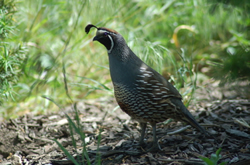

Welcome to Backyard Birds of Utah!
If you love birdwatching like we do, you should enjoy looking around this site. Take a look at our Bird Profiles and take the opportunity to complete our survey.


American Goldfinch
What our customers have been saying...

My name is Dave Jorgensen. I live in northern Utah and I enjoy bird watching. Every year I look forward to finding a nature calendar to put in my office. Because I work in the city, I enjoy being reminded about the beauty of the state of Utah. I was excited to find the calendar offered by Bart Jones. I recognize some of the bird varieties from my own back yard, but I was amazed to see the wide variety of birds he has captured with his camera in his Eureka neighborhood. The colors of the birds are so brilliantly captured that they look very real.